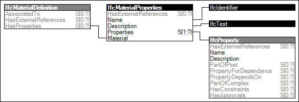

Material properties may capture standard or user-defined parameters.
Figure 114 illustrates an instance diagram.

Figure 114 — Material Properties
Link to this page
 Link to this page
Link to this page